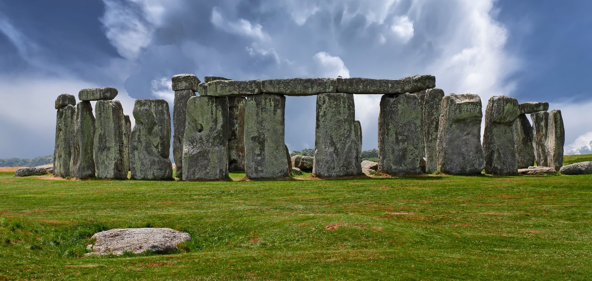

STONEHENGE
Stonehenge merupakan suatu bangunan yang dibangun pada zaman Perunggu, dan Neolitikum. Ia terletak berdekatan dengan Amesbury di Wiltshire, Inggris, sekitar 13 kilometer barat laut Salisbury. Sebagai salah satu situs yang paling terkenal di dunia, Stonehenge merupakan lingkaran batu tegak yang berada di dalam lingkup tembok tanah.
pertikaian mengenai usia sebenarnya lingkaran batu tersebut, tetapi kebanyakan arkeolog memperkirakan bahwa bangunan tersebut didirikan antara 3.000 SM hingga 2.000 SM. Pada tahun 2008, penanggalan radiokarbon menunjukkan bahwa batu pertama didirikan antara 2400 hingga 2200 SM.[1] Sedangkan teori lain mengindikasikan bahwa batu biru (bluestone) didirikan sekitar 3.000 SM.
Gundukan tanah dan parit berbentuk melingkar yang ada di sekitarnya, merupakan penanda mengenai tahapan awal pembangunan monumen tersebut. Penanggalan yang didapat dari fitur tersebut adalah sekitar 3.100 SM. Situs Stonehenge dan lingkungan di sekitarnya ditambahkan ke dalam daftar Situs Warisan Dunia UNESCO pada tahun 1986 bersamaan dengan Avebury Henge.[2][3]
Stonehenge berasal dari kata Stone dan Henge. Stone berarti batu, sedangkan Henge berarti lingkaran. Arkeolog mendefinisikan henge sebagai tembok tanah yang berbentuk melingkar dan terdapat parit di dalamnya.[4]
Pada awal abad ke-20, kebanyakan dari batu-batu itu tidak lagi berdiri tegak. Hal ini kemungkinan disebabkan banyaknya wisatawan yang menaiki Stonehenge pada sekitar abad ke-19 karena keingintahuan mereka yang besar. Semenjak itu, telah dilakukan tiga tahap renovasi untuk menegakkan kembali batu yang miring atau terbalik, dan untuk mengembalikan batu-batu tersebut ke tempat semula dengan teliti.
Sejarah awal
Stonehenge dibangun dalam beberapa fase pembangunan selama setidaknya 1.500 tahun dan sepanjang kurun waktu itu aktivitas terus berjalan. Terdapat beberapa bukti adanya pembangunan konstruksi secara besar-besaran di dan di sekitar monumen, membuat peninggalan mengenai pembangunan monumen ini dapat berkisar hingga 6.500 tahun. Peninggalan mengenai aktivitas pembangunan monumen ini sulit diketahui karena beberapa hal seperti lapisan kapur alam karena periglasial dan hewan yang menggali tanah, catatan penggalian yang buruk beserta kurang akuratnya data yang ada.
Sebelum monumen didirikan (8.000 S.M.)
Arkeolog telah menemukan empat (kemungkinan lima) lubang tiang patokan (postholes) dengan penanggalan 8.000 S.M., di tempat yang sekarang menjadi lahan parkir. Tiga dari tiang tersebut (kemungkinan empat), terletak dalam deretan timur ke barat yang mungkin ada hubungannya dengan kegiatan yang tidak lazim ritual.
Tahap Pembangunan Stonehenge
Stonehenge I
Monumen pertama terdiri dari gundukan tanah melingkar dan parit dengan diameter berukuran 115 meter (320 kaki) dan dengan satu pintu masuk di bagian timur laut. Fase ini terjadi sekitar 3.100 SM. Di bagian luar kawasan lingkaran terdapat 59 lubang yang dikenal sebagai lubang Aubrey untuk memperingati John Aubrey, seorang arkeolog abad ketujuh belas yang pertama kali mengidentifikasi lubang-lubang tersebut.
Pada tahun 2013, sekelompok Arkeolog yang dipimpin oleh Professor Mike Parker Pearson, mengekskavasi lebih dari 50.000 tulang yang dikremasi dari 63 individu yang dikubur di lubang Aubrey, Stonehenge. Ada kemungkinan bahwa beberapa di antaranya merupakan kaum bangsawan.[5][6] Pada fase ini, sebuah batu tunggal monolit besar yang tidak dihaluskan dikenal sebagai 'Batu Tumit' (Heel Stone) diletakkan di luar pintu masuk.
Stonehenge II
Bukti fase kedua sudah tidak terlihat lagi. Dari jumlah lubang tiang patokan yang berpenanggalan awal 300 S.M., mengindikasikan bahwa beberapa struktur kayu dibentuk di dalam kawasan pada masa ini. Pada masa ini setidaknya, 25 fungsi lubang Aubrey telah berubah menjadi tempat penguburan abu pemakaman. Pada masa ini, Stonehenge diinterpretasikan sebagai kuburan kremasi yang tertutup. Ini merupakan kuburan kremasi yang pertama diketahui di daerah Inggris.
Stonehenge IIIa
Ekskavasi arkeologi menunjukkan bahwa sekitar 2600 SM, para pembangun Stonehenge telah meninggalkan penggunaan kayu sebagai patokan. Mereka beralih dengan menggunakan batu dan membuat dua buah lubang lengkungan bulan sabit (yang dikenal dengan nama lubang Q dan R), di tengah-tengah lokasi Stonehenge. Kekurangan dari bukti pembangunan ini adalah bukti penanggalan yang tidak kuat. Pada lubang-lubang ini setidaknya terdapat 80 batu yang berdiri, dan hanya 43 buah yang dapat ditemukan pada saat ini. Batu ini disebut batu biru atau bluestone, diperkirakan berasal dari bukit Preseli, sekitar 240 kilometer jauhnya dari Stonehenge, di tempat yang sekarang bernama Pembrokeshire, Wales dengan tenaga manusia. Teori lainnya yang banyak didukung saat ini adalah batu itu dibawa memanfaatkan gletser laut Irlandia.